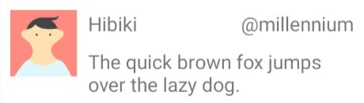
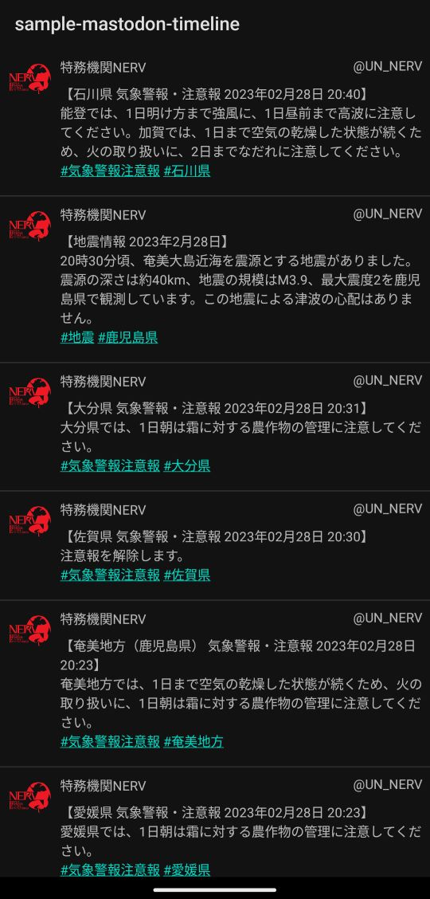

KotlinでOKHttpを使う(MastodonのAPIに触ってみる)
現在KotlinでMastodonのアプリを書いています
折角なので、タイムラインを取得するサンプルを此処に書き記しておきます
OKHttpでMastodonのAPIを叩く
根幹となる処理です
Mastodonのドキュメントのコレに対応した処理を定義します
Timelines.kt
class Timelines(
private val server: String,
private val accessToken: String?,
){
fun getPublic(maxId: String?, sinceId: String?): Response {
val url = ("https://$server/api/v1/timelines/public").toHttpUrl()
val params = HashMap<String, String>().apply {
put("limit", "20") // 一度に取得する投稿の数です 20なら20件分の投稿がリストで返ってきます
put("local", "true") // これが無い場合は連合タイムラインの内容が返ってきます
maxId?.let { put("max_id", "$maxId") }
sinceId?.let {put("since_id", "$sinceId")}
}
val urlBuilder =url.newBuilder().apply {
params.forEach{ param -> addQueryParameter(param.key, param.value)}
}
val request = Request.Builder()
.url(urlBuilder.build())
.addHeader("Authorization", "Bearer $accessToken")
.get()
.build()
return OkHttpClient().newCall(request).execute()
}
}
Mastodonのタイムライン等はアクセストークンが無くても取得できるのでNull許容としています (投稿にアクションを付けるといった、アクセストークンが必須な物も勿論あります)
nullの時に本当はaddHeader()外したいんですけど面倒くさくて手を抜いています
戻り値はResponse(OKHttpライブラリのクラス)になっていますが、JSON文字列(投稿内容)はResponse.body.string()で取得できます
maxIdとsinceIdは取得する投稿の範囲の指定に使用します(今回は省略します)
これを用いると、取得済みの投稿との差分を取得できます
エンティティの定義
APIを叩いて返ってきたJSON文字列に対応するdata classを定義します
Mastodonのドキュメント を参考に定義していきます
Status.kt
data class Status(
val id: String,
val account: Account,
val content: String,
)
Account.kt
data class Account(
val id: String,
val acct: String,
val display_name: String,
val avatar: String,
)
得られるJSON文字列にはもっと沢山の情報が入っているのですが、今回は使用するものだけを定義しています
ListView用のアダプタクラスの作成
取得したJSON文字列は、List<Status>にパースしてからListViewに表示させます
ここではListViewにセットするためのアダプタクラスを定義します
class TimelineAdapter(
context: Context,
private var statuses: MutableList<Status>,
) : BaseAdapter() {
private val inflater = LayoutInflater.from(context)
override fun getView(position: Int, convertView: View?, parent: ViewGroup): View {
val view = convertView ?: inflater.inflate(R.layout.row_status, parent, false)
val status = statuses[position]
status.account.avatar.let {
val imageView = view.findViewById<ImageView>(R.id.avatar)
Picasso.get().load(it).into(imageView) // URLから画像を取得してImageViewにセットしてます
}
status.account.display_name.let {
val textView = view.findViewById<TextView>(R.id.display_name)
textView.text = it
}
status.account.acct.let {
val textView = view.findViewById<TextView>(R.id.acct)
textView.text = run {"@$it"} // 文字列連結の警告をrunで誤魔化しています...嫌な人は修正して
}
status.content.let {
val textView = view.findViewById<TextView>(R.id.summary)
textView.text = Html.fromHtml(it, Html.FROM_HTML_MODE_COMPACT)
}
return view
}
override fun getCount(): Int {
return statuses.size
}
override fun getItem(position: Int): Any {
return statuses[position]
}
override fun getItemId(position: Int): Long {
return position.toLong()
}
fun addItem(list: List<Status>) {
statuses.addAll(0, list)
}
}
肝となるのはアイコン画像(アバター画像)をImageViewにセットする所でしょうか?
Picassoという外部ライブラリを用いることで、URLの示す画像を取得しそれをImageViewにセットすることが出来ます
Picassoを使用するにはbuild.gradle(:app)へ定義を追加します
dependencies {
implementation 'com.squareup.picasso:picasso:2.71828'
...
}
バージョン表記がネイピア数なのシャレオツですき
一応レイアウトファイルも載せとくか・・・
<?xml version="1.0" encoding="utf-8"?>
<androidx.constraintlayout.widget.ConstraintLayout
xmlns:android="http://schemas.android.com/apk/res/android"
xmlns:app="http://schemas.android.com/apk/res-auto"
xmlns:tools="http://schemas.android.com/tools"
android:layout_width="match_parent"
android:layout_height="match_parent">
<ImageView
android:id="@+id/avatar"
android:layout_width="48dp"
android:layout_height="48dp"
android:layout_marginStart="8dp"
android:layout_marginTop="8dp"
app:layout_constraintStart_toStartOf="parent"
app:layout_constraintTop_toTopOf="parent"
tools:srcCompat="@tools:sample/avatars" />
<TextView
android:id="@+id/display_name"
android:layout_width="0dp"
android:layout_height="wrap_content"
android:layout_marginStart="8dp"
android:layout_marginTop="8dp"
android:layout_marginEnd="8dp"
android:text="Hibiki"
app:layout_constraintEnd_toStartOf="@+id/acct"
app:layout_constraintStart_toEndOf="@+id/avatar"
app:layout_constraintTop_toTopOf="parent" />
<TextView
android:id="@+id/acct"
android:layout_width="wrap_content"
android:layout_height="wrap_content"
android:layout_marginEnd="8dp"
android:text="\@millennium"
app:layout_constraintEnd_toEndOf="parent"
app:layout_constraintTop_toTopOf="@+id/display_name" />
<TextView
android:id="@+id/summary"
android:layout_width="0dp"
android:layout_height="wrap_content"
android:layout_marginStart="8dp"
android:layout_marginTop="8dp"
android:layout_marginEnd="8dp"
android:text="The quick brown fox jumps over the lazy dog."
app:layout_constraintEnd_toEndOf="parent"
app:layout_constraintStart_toEndOf="@+id/avatar"
app:layout_constraintTop_toBottomOf="@+id/display_name" />
</androidx.constraintlayout.widget.ConstraintLayout>
こんな感じのレイアウトがListViewにずらーっと並ぶ形になります

ViewModelクラスの作成
Activityに対応するViewModelを定義します
古のAndroidではActivityに色々書いていてごっちゃになっていたかと思いますが、Vieｗの操作以外をActivityから分離する為に用いられるのがこのViewModelになります
今回は、通信の処理をActivityからは呼び出さず、ViewModelを挟んで行います
class MainViewModel: ViewModel() {
private val _lists = MutableLiveData<List<Status>>()
val lists: LiveData<List<Status>>
get() = _lists
fun getStatuses(){
val server = "unnerv.jp"
val accessToken = null
val client = Timelines(server, accessToken)
viewModelScope.launch {
val results = withContext(Dispatchers.IO) {
client.getPublic(null, null)
}
if(!results.isSuccessful) return@launch
val json = results.body?.string() ?: return@launch
_lists.value = Gson().fromJson(json, object: TypeToken<List<Status>>(){}.type) as List<Status>
}
}
}
通信について
まず、Androidではメインスレッド(UIスレッド)で通信を行うと怒られますので、別スレッドで非同期的に行う必要があります
その方法はまあ色々あるのですが、ここではCoroutineScopeを使用しています(詳しい説明をできるほど知識が無いので詳細は省きます)
viewModelScope.launch{}の中では、非同期処理の終了を待ってから順々に処理が進んでいくので、このようなすっきりしたコードを書くことが出来ます
ただしlaunch{}で処理を囲んだだけでは、実行スレッドがメインスレッドのままとなってしまいます
withContext(Dispatchers.IO) {}で囲むことによって、別スレッドでAPIを叩くようにします
サンプルなので失敗時は適当にreturn@launchしています
LiveData
JSON文字列をパースした後はLiveDataに突っ込んでいますが、
- Activity が LiveDataの変更通知を受け取る
- LiveDataの中身をアダプタにセットしてListViewへ反映する
という算段です(LiveDataの説明は省略させて頂きたく・・・)
この後に1と2の処理をActivityへ記述します
build.gradle
あと、viewModelScopeのプロパティを使用するにはbuild.gradle(app)への追記をお忘れなく・・・
dependencies {
// to use property "viewModelScope"
implementation 'androidx.lifecycle:lifecycle-viewmodel-ktx:2.5.1'
// for Gson (to encode json)
implementation 'com.google.code.gson:gson:2.10'
...
}
コメントが日本語だったり英語だったりガバガバな癖辞めたい
Activityの実装
最後にActivity周りです
ViewModelを使用したお陰で大分簡単になっていますね！
class MainActivity : AppCompatActivity() {
private lateinit var binding: ActivityMainBinding
private lateinit var viewModel: MainViewModel
private lateinit var adapter: TimelineAdapter
override fun onCreate(savedInstanceState: Bundle?) {
super.onCreate(savedInstanceState)
binding = ActivityMainBinding.inflate(layoutInflater)
setContentView(binding.root)
viewModel = ViewModelProvider.NewInstanceFactory().create(MainViewModel::class.java)
adapter = TimelineAdapter(this@MainActivity, mutableListOf()).apply {
val listView = binding.listView
listView.adapter = this
}
// ViewModelのリストの内容が変わったらListViewに反映する
viewModel.lists.observe(this@MainActivity, Observer {
adapter.addItem(it)
adapter.notifyDataSetChanged()
})
// ViewModelを介して通信の処理を呼出す
viewModel.getStatuses()
}
}
ビューバインディング
今どきっぽい(?)実装を行う為にビューバインディングを使用しています
今まではViewの取得にfindViewById()していましたが、nullったりするリスクが有りました
val textView = findViewById<TextView>(R.id.foobar)
ビューバインディングではレイアウトファイルに対応するインスタンスを取得し、そのプロパティを参照することによってViewを取得しています
binding = ActivityMainBinding.inflate(layoutInflater)
val textView = binding.foobar
この場合、他のレイアウトのリソースIDを参照してnullってしまうといった事案を回避する(ビルドで弾く)ことができます
build.gradleへの追記をお忘れ無く
android {
buildFeatures {
viewBinding true
}
...
}
ViewModel
ViewModelの取得方法はお作法みたいなものですので、特に説明することは無いかなと思います (Android StudioでViewModelを使用するテンプレートを選ぶと勝手にやってくれますしね)
載せる意味があるか微妙なレイアウトファイル
<?xml version="1.0" encoding="utf-8"?>
<androidx.constraintlayout.widget.ConstraintLayout
xmlns:android="http://schemas.android.com/apk/res/android"
xmlns:app="http://schemas.android.com/apk/res-auto"
xmlns:tools="http://schemas.android.com/tools"
android:layout_width="match_parent"
android:layout_height="match_parent"
tools:context=".MainActivity">
<ListView
android:id="@+id/listView"
android:layout_width="0dp"
android:layout_height="0dp"
app:layout_constraintBottom_toBottomOf="parent"
app:layout_constraintEnd_toEndOf="parent"
app:layout_constraintStart_toStartOf="parent"
app:layout_constraintTop_toTopOf="parent" />
</androidx.constraintlayout.widget.ConstraintLayout>
通信周りの権限
ネットに繋ぐアプリを作るにはそれについての権限をAndroidManifest.xmlに追記する必要があります
applicationと同じ階層に追記します
<uses-permission android:name="android.permission.INTERNET" /> // これが要る
<application
...
tools:targetApi="31">
...
</application>
実行するとこんな感じ
ビルドして実行すると、空のListViewが表示された後に少し遅れて取得内容が表示されます

人様の投稿内容を載せるのも気がひけるので、今回はNERV鯖のタイムラインを取得してみました(情報の拡散目的で転載している訳では無いので目を瞑って頂けると・・・)
ここにFragmentでカラムを追加したり、ローディング中にグルグルするやつ(ProgressBar)を追加していけば、もっとそれらしくなりますね
本当はGitHubにコード纏めて上げれば良いんだけど面倒くさい
Androidにおける実装は色々な方法があってややこしいので、一つの参考になればと思います
(完)